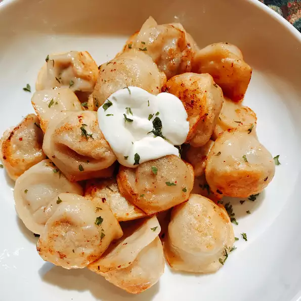

Pelmeni are traditional Russian meat-filled dumplings. Making pelmeni is favorite family pastime in the long winter months. These dumplings are a common convenience food — big batches can be frozen and quickly boiled or fried on demand.
Combine egg, vegetable oil, and salt in a measuring cup; add enough water to fill to 1 cup. Pour into a bowl, add 3 cups flour, and knead into a smooth, elastic dough. Cover with a kitchen towel and rest for 30 minutes.
Dust a baking sheet lightly with 1 tablespoon flour.
Combine ground beef, onion, water, salt, and pepper in a bowl and mix filling thoroughly by hand or using a fork.
Roll out a portion of the dough very thinly on a lightly floured surface and cut out 2 1/2-inch rounds with a cookie cutter or a wine glass. Keep the rest of the dough covered with a towel to avoid drying out. Place 1/2 to 1 teaspoon of filling on one side of the dough circle. Fold dough over and seal the edges using fingers, forming a crescent. Join the ends and pinch them together. Place on the prepared baking sheet. Repeat with remaining dough and filling. Freeze pelmeni for 30 minutes to prevent them from sticking together.
Bring a large pot of lightly salted water to a simmer and drop small batches of frozen pelmeni into simmering water. Cook and stir until the meat is cooked and pelmeni float to the top, about 5 minutes. Continue cooking for an additional 5 minutes. Transfer to serving plates using a slotted spoon.